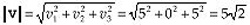

| Previous | Table of Contents | Next |
Several years ago, I opened a column in Dr. Dobb’s Journal with a story about singing my daughter to sleep with Beatles’ songs. Beatles’ songs, at least the earlier ones, tend to be bouncy and pleasant, which makes them suitable goodnight fodder—and there are a lot of them, a useful hedge against terminal boredom. So for many good reasons, “Can’t Buy Me Love” and “A Hard Day’s Night” and “Help!” and the rest were evening staples for years.
No longer, though. You see, I got my wife some Beatles tapes for Christmas, and we’ve all been listening to them in the car, and now that my daughter has heard the real thing, she can barely stand to be in the same room, much less fall asleep, when I sing those songs.
What’s noteworthy is that the only variable involved in this change was my daughter’s frame of reference. My singing hasn’t gotten any worse over the last four years. (I’m not sure it’s possible for my singing to get worse.) All that changed was my daughter’s frame of reference for those songs. The rest of the universe stayed the same; the change was in her mind, lock, stock, and barrel.
Often, the key to solving a problem, or to working on a problem efficiently, is having a proper frame of reference. The model you have of a problem you’re tackling often determines how deeply you can understand the problem, and how flexible and innovative you’ll be able to be in solving it.
An excellent example of this, and one that I’ll discuss toward the end of this chapter, is that of 3-D transformation—the process of converting coordinates from one coordinate space to another, for example from worldspace to viewspace. The way this is traditionally explained is functional, but not particularly intuitive, and fairly hard to visualize. Recently, I’ve come across another way of looking at transforms that seems to me to be far easier to grasp. The two approaches are technically equivalent, so the difference is purely a matter of how we choose to view things—but sometimes that’s the most important sort of difference.
Before we can talk about transforming between coordinate spaces, however, we need two building blocks: dot products and cross products.
At this point in the book, I was originally going to present a BSP-based renderer, to complement the BSP compiler I presented in the previous chapter. What changed my plans was the considerable amount of mail about 3-D math that I’ve gotten in recent months. In every case, the writer has bemoaned his/her lack of expertise with 3-D math, and has asked what books about 3-D math I’d recommend, and how else he/she could learn more.
That’s a commendable attitude, but the truth is, there’s not all that much to 3-D math, at least not when it comes to the sort of polygon-based, realtime 3-D that’s done on PCs. You really need only two basic math tools beyond simple arithmetic: dot products and cross products, and really mostly just the former. My friend Chris Hecker points out that this is an oversimplification; he notes that lots more math-related stuff, like BSP trees, graphs, discrete math for edge stepping, and affine and perspective texture mappings, goes into a production-quality game. While that’s surely true, dot and cross products, together with matrix math and perspective projection, constitute the bulk of what most people are asking about when they inquire about “3-D math,” and, as we’ll see, are key tools for a lot of useful 3-D operations.
The other thing the mail made clear was that there are a lot of people out there who don’t understand either type of product, at least insofar as they apply to 3-D. Since much or even most advanced 3-D graphics machinery relies to a greater or lesser extent on dot products and cross products (even the line intersection formula I discussed in the last chapter is actually a quotient of dot products), I’m going to spend this chapter examining these basic tools and some of their 3-D applications. If this is old hat to you, my apologies, and I’ll return to BSP-based rendering in the next chapter.
The dot and cross products themselves are straightforward and require almost no context to understand, but I need to define some terms I’ll use when describing applications of the products, so I’ll do that now, and then get started with dot products.
I’m going to have to assume you have some math background, or we’ll never get to the good stuff. So, I’m just going to quickly define a vector as a direction and a magnitude, represented as a coordinate pair (in 2-D) or triplet (in 3-D), relative to the origin. That’s a pretty sloppy definition, but it’ll do for our purposes; if you want the Real McCoy, I suggest you check out Calculus and Analytic Geometry, by Thomas and Finney (Addison-Wesley: ISBN 0-201-52929-7).
So, for example, in 3-D, the vector V = [5 0 5] has a length, or magnitude, by the Pythagorean theorem, of

(eq. 1)
(where vertical double bars denote vector length), and a direction in the plane of the x and z axes, exactly halfway between those two axes.
| Previous | Table of Contents | Next |